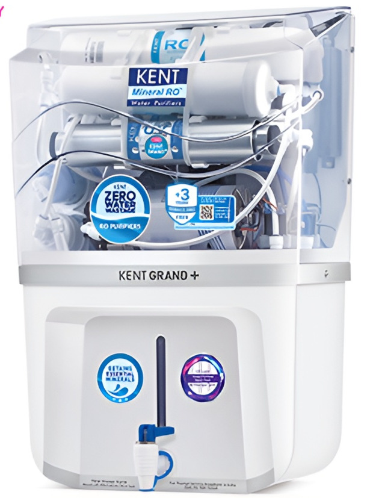
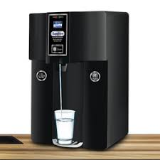
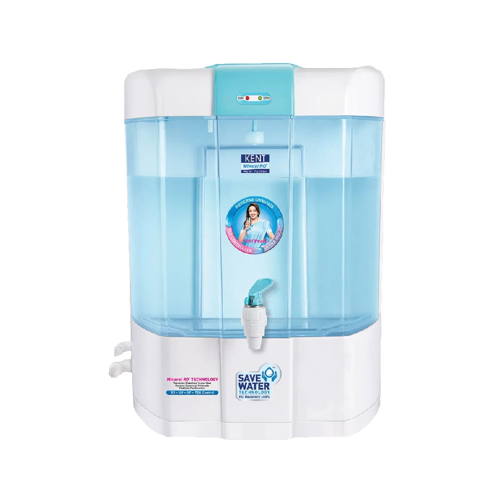
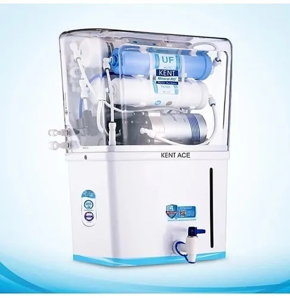
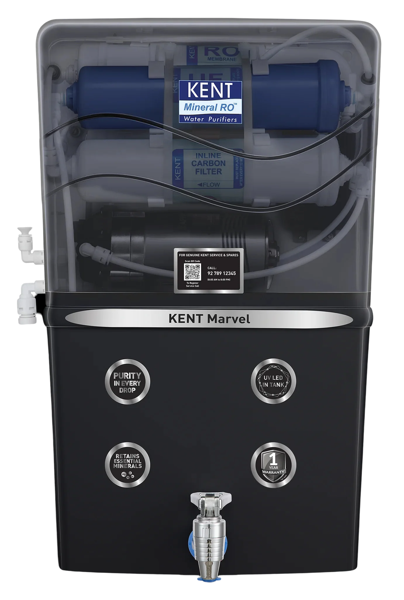
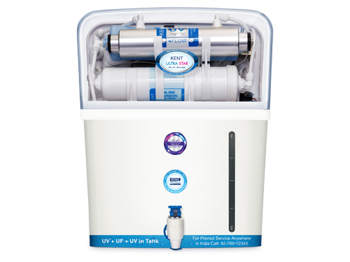
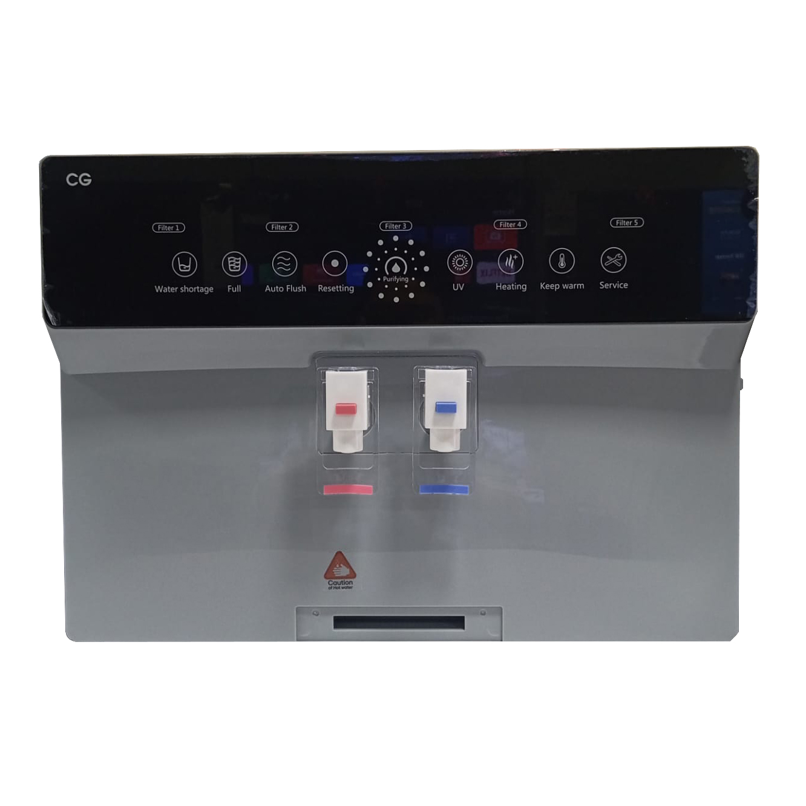
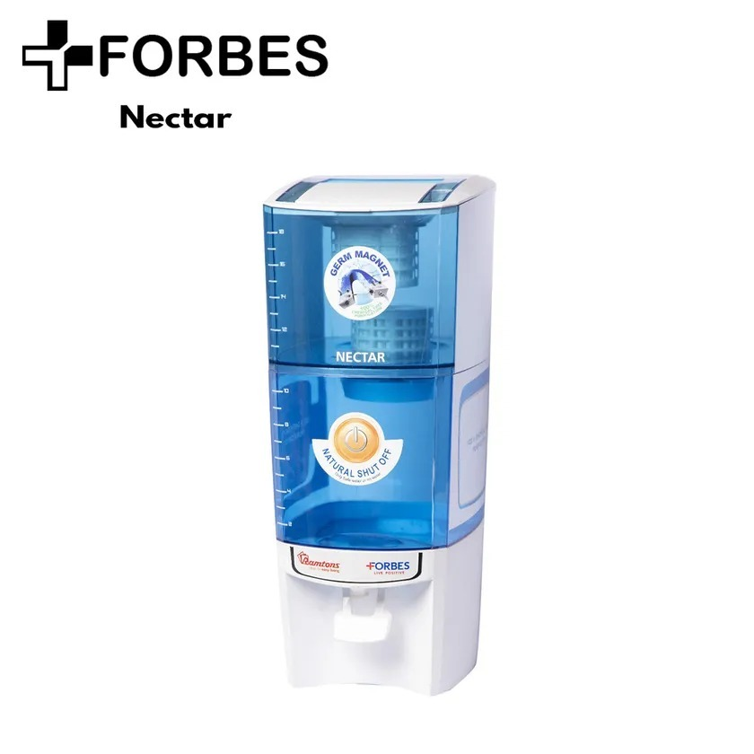

Home Appliance Guide | Water Purifiers
Water Purifier Price in Nepal [Updated 2026]

Best water purifier deals at Shisham Homes (real-time prices)
All purifiers listed below are in stock, come with official Nepali warranty, free installation within Kathmandu Valley, and genuine spare parts. Click any product for detailed specifications.







Access to safe drinking water is a growing concern in Nepal, with increasing urbanization and groundwater contamination. Water purifier prices in Nepal range from NPR 5,000 for basic UV filters to over NPR 40,000 for advanced RO (Reverse Osmosis) systems with hot and cold dispensing. This 2026 guide helps you understand different purification technologies, choose the right capacity, compare top brands like Kent, CG, and Forbes, and find the best deals at Shisham Homes.
Water Purifier Price Ranges in Nepal (2026)
Based on technology, brand, and features, here are the realistic price segments for water purifiers in Nepal. All prices include VAT.
| Purifier Type | Technology | Storage (L) | Price Range (NPR) | Ideal for |
|---|---|---|---|---|
| Basic UV/UF purifier | UV + Carbon | 6-10 L | 5,000 - 12,000 | Low TDS water, rented homes |
| RO + UV purifier | RO + UV + UF | 7-12 L | 15,000 - 28,000 | High TDS, borewell water |
| RO + UV + Mineralizer | RO + UV + TDS control | 8-15 L | 25,000 - 38,000 | Balanced mineral water, health conscious |
| Hot & Cold RO dispenser | RO + UV + hot/cold | 4-8 L (instant) | 35,000 - 55,000 | Offices, large families |
Kent leads the premium segment with advanced RO+UV+mineralizer technology, while CG and Forbes offer value-for-money options. Shisham Homes stocks genuine models with full warranty and free installation.
RO vs UV vs UF: Understanding purification technologies
Reverse Osmosis (RO) removes dissolved salts, heavy metals, and TDS. Essential for borewell water or high TDS areas (above 500 ppm). Ultraviolet (UV) kills bacteria and viruses but does not remove dissolved solids. Ultrafiltration (UF) filters suspended particles but not dissolved impurities. For most Nepali households, a combination of RO+UV is recommended, with TDS controller to retain essential minerals. Kent's mineralizer technology adds back beneficial minerals like magnesium and calcium.
Storage capacity guide for families
Storage capacity determines how much purified water is available instantly. For a family of 4, a 7-8 litre tank is sufficient. For larger families or frequent guests, choose 10-12 litres. Hot and cold dispensers typically have smaller storage but provide instant hot/cold water without a kettle.
- 1-3 persons: 5-7 litres storage
- 4-5 persons: 7-9 litres (most popular segment)
- 6+ persons or offices: 10+ litres or hot/cold dispenser
TDS and water hardness in Nepali cities
Total Dissolved Solids (TDS) in Kathmandu valley ranges from 150 to 800 ppm, while in Terai cities like Biratnagar and Nepalgunj, TDS can exceed 1500 ppm. A good RO purifier should have a TDS controller that allows you to adjust mineral content. Kent Grand Plus and Sapphire models feature manual TDS adjustment. For high TDS areas, ensure the purifier has a high rejection membrane (up to 2000 ppm).
Smart buying tips for water purifiers in Nepal
- Test your water first: Use a TDS meter (available at Shisham Homes) to know the exact TDS level.
- Check filter replacement cost: RO membranes need replacement every 12-24 months. Kent filters cost approx NPR 4,000-6,000 per set.
- Installation and service: Shisham Homes provides free installation and has tie-ups with authorised service centers for annual maintenance.
- Electricity consumption: RO purifiers require electricity (approx 30-60 watts). Inverter models are available for power cuts.
- Certifications: Look for NSF or ISO certification. All Kent and CG models are certified.
Maintenance tips for long life
Replace pre-filter every 3-6 months, RO membrane every 12-18 months depending on usage and water quality. Clean the storage tank every 2 months with mild citric acid. Use only genuine replacement filters from Shisham Homes to avoid damage. For Kent purifiers, annual service package costs around NPR 2,500.
Frequently asked questions about water purifier prices in Nepal
What is the average cost of an RO water purifier in Nepal?
Basic RO+UV models start at NPR 15,000, while premium RO+UV+mineralizer models range from NPR 25,000 to NPR 38,000.
Which brand is best for water purifiers in Nepal, Kent or CG?
Kent is the market leader with advanced mineral retention technology and wide service network. CG offers excellent value for hot & cold dispensers. Both have genuine spare parts available.
Is RO water safe for long-term consumption?
Yes, if the purifier has a mineralizer or TDS controller that retains essential minerals. Kent's Grand Plus and Sapphire models include this feature.
How much water is wasted by an RO purifier?
Conventional RO wastes 3-4 litres per litre of purified water. Kent's "Zero Water Wastage" technology reduces this significantly. CG models also have low rejection rates.
Where can I buy genuine water purifiers in Kathmandu?
Shisham Homes offers authentic products with warranty, free delivery, and installation. Visit our showroom or order online.
Ensure safe drinking water for your family today
Shisham Homes stocks the widest range of Kent, CG, and Forbes water purifiers at the best prices in Nepal. Get free installation and genuine warranty.
View all water purifier deals →Prices are subject to change. Please check the product page for the latest price and availability. Free installation applies within Kathmandu Valley only.